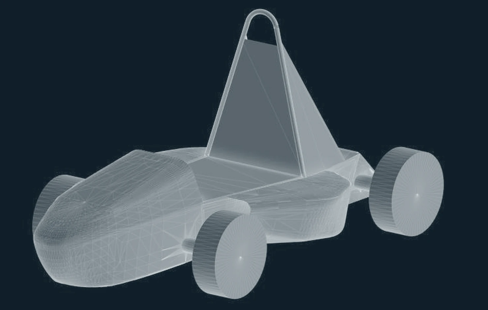
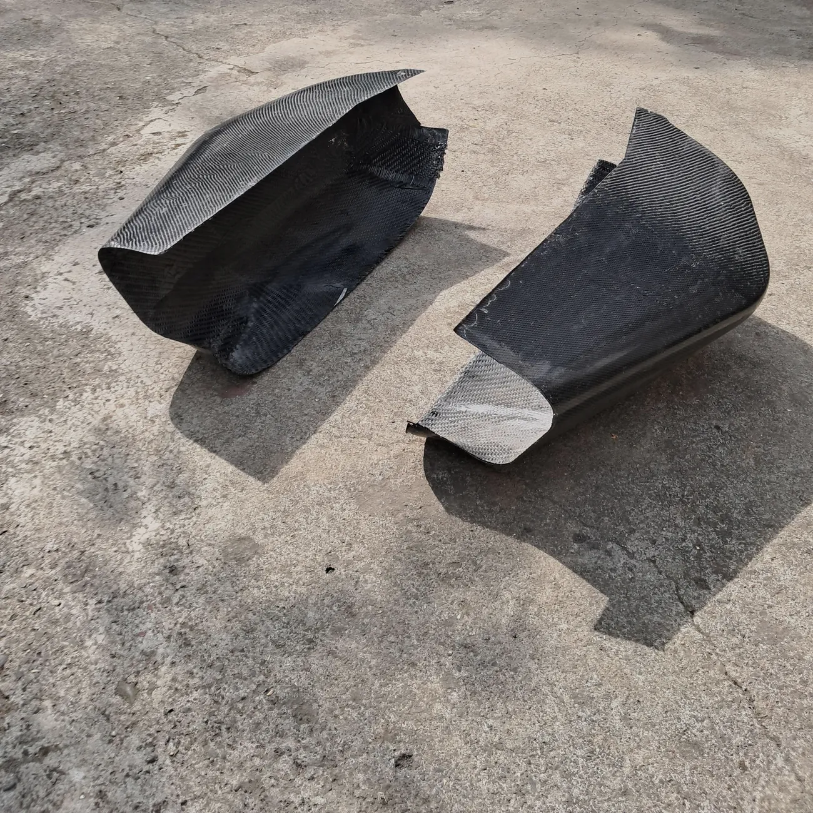
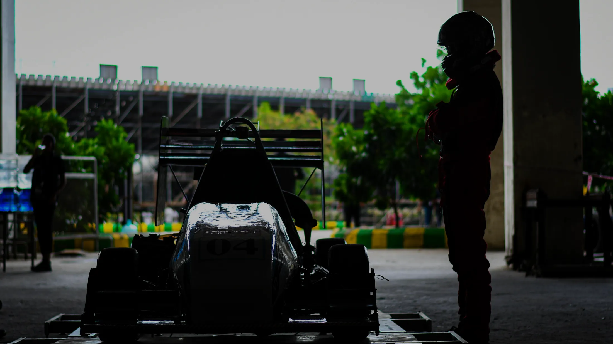

Objective
To determine how much downforce a single-seater race car could gain, while also reducing drag and mass, using a package manufactured in house by a student team, and to establish whether on-track performance agreed with the simulation.
Methodology
Led a team of five through the concept, CFD, manufacture and testing of the aerodynamic package: the nosecone, the front and rear wings on the 2022 car, and the sidepods introduced in the 2024 season.

- Modelled the aerodynamic surfaces in SolidWorks using boundary surfaces and lofts, preparing clean geometry for meshing.
- Performed external aerodynamics CFD in ANSYS Fluent, using polyhedral meshes and the realizable k-ε turbulence model.
- Performed FEA in ANSYS Static Structural on the front wing and swan neck mounts to select material and section thickness.

- Manufactured the carbon fibre components in house, applying design for manufacture and GD&T principles.
- Collaborated with the vehicle dynamics team on balance targets, and trained and reviewed the work of two junior members, both of whom went on to present the design to the judges.

Results
On the 2022 car, the package delivered 12% more downforce and 18% less drag, with its mass reduced from 15 kg to 8 kg, a 46.7% reduction.